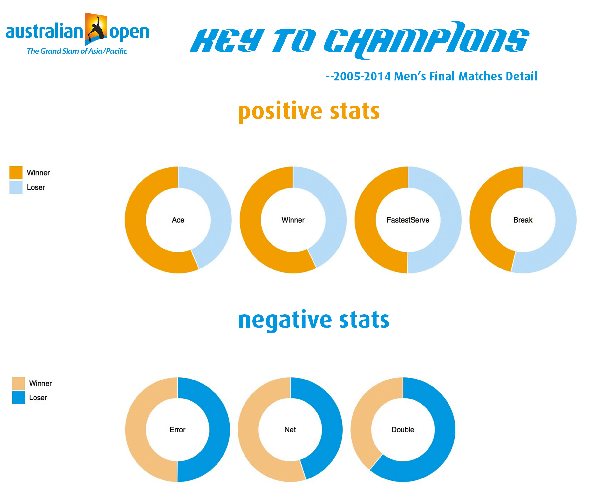
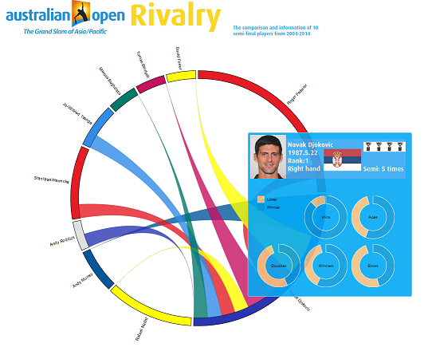
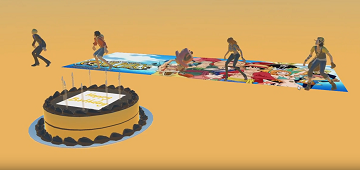
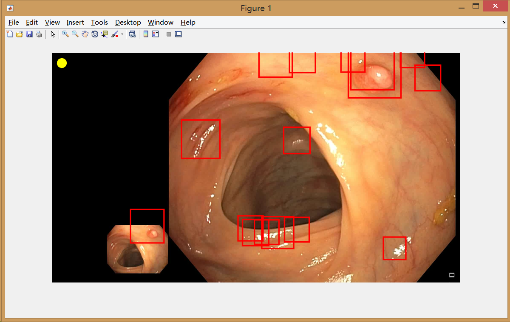

This is a info graph based on the stats of Australian Open from 2004 - 2014. After comparing the crucial stats of the champions and runner-ups, I created this graph to visualize the analysis. Link

Rivalry
After the info graph, I dug deeper and looked into the top-10 semi-final players from 04-14. Based on the similar idea, I listed players personal stats and compared players with each other to show the rivalry story and the domination of players. In order to provide better details, the information is visulized into an interactive website. Link

Food In Phoenix 2015
Based on the public dataset from Yelp Phoenix, my group and I made this interactive recommendation web to provide our insights. We did a sentiment analysis and weight the score with the users' scores and the price range to recommend different types of restaurants. We also put animated rank marks on the map to deliver better visual effects. Link
Happy Birthday V2.0
Developed a 3D animation on Unity with the characters from One Piece. Animated the characters to dance with music. Video Link Github Link

Unity VR for Cardboard
To be updated
Polyp Detection
A Matlab-based image/video analytic program to detect polyps with Random Forest, DAISY, Circular Hough Transform, ROC, Convolutional Neural Network and Bag of Visual Words etc. Video Link

Game Theory
To be updated
Solar Powered
This is a project based on location service and XML api. We want to get the latitude and longitude of the user and get the solar info from the api. We compare it with the averge energy used with traditional power and calculate the savings if using a suggested solar panel. Github Link